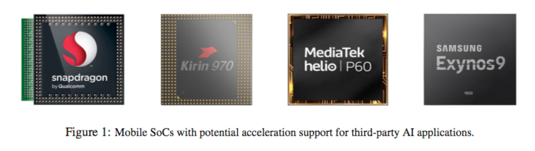
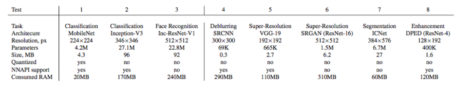
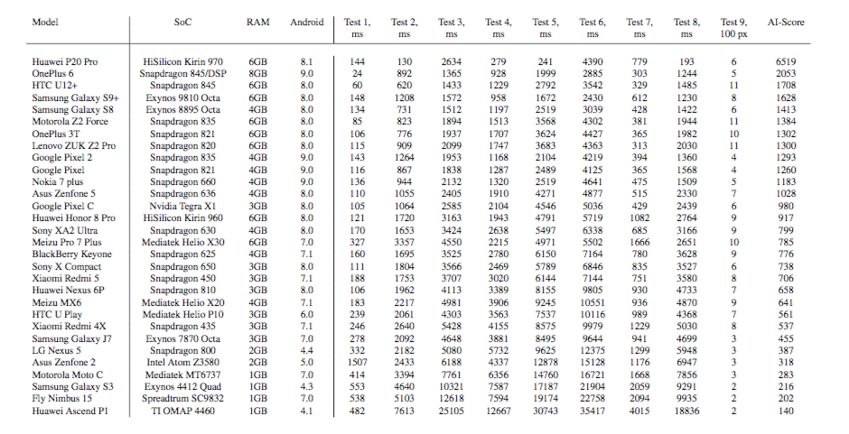

AI Benchmark: Running Deep Neural Networks on Android Smartphones
URL: https://arxiv.org/abs/1810.01109
关于手机各种硬件平台一篇比较好的科普论文，论文主要提出了一个AI Benchmark来客观评估各个手机平台包括华为海思、高通、联发科、三星、谷歌Pixel等在标准CV任务比如识别、分割上面的具体表现。
论文主要介绍了华为海思、高通、联发科、三星、谷歌Pixel等手机平台针对AI任务所做的具体优化：

- 高通：SNPE(Snapdragon Neu- ral Processing Engine)，支持大多数主流的框架比如Caffe、Tensorflow等，需要INT8量化。
- 华为海思：NPU(Neural Processing Unit), 当前总共有两款NPU，970和980。目前只支持Caffe和Tensorflow平台，论文中也提到了目前应该只支持16-bit float。
- 联发科：APU(AI Processing Unit), 需要INT8量化，论文上写只有P60，现在应该还有其他的APU发布。框架的话支持Caffe、Tensorflow、ONNX。
- 三星：VPU(Vision Processing Unit), 主要用在手机摄像头，目前没有提出对AI任务的针对性支持
- Google：IPU( Image Processing Unit ),支持16-bit int和8-bit int，目前也没有提出对AI任务的针对性支持。
论文另外一个主要内容就是介绍了其”AI Benchmark”, 至于具体的任务和具体的模型下表给了一个相对比较仔细的介绍，总共是下表的8个任务外加一个Memory Limitation测试共9个测试任务:

实验结果

本博客所有文章除特别声明外，均采用 CC BY-NC-SA 4.0 许可协议。转载请注明来自 Out of Memory！